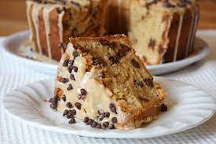

Peanut Butter Pound Cake

Description
A soft mellow beautiful cake with peanut and chocolate pieces. Perfect for thanksgiving
- 2 cups white sugar
- 1 ¼ cups butter, softened
- 6 eggs
- 1 teaspoon vanilla extract
- ½ cup creamy peanut butter
- 2 cups all-purpose flour
- 1 teaspoon baking powder
- ¼ teaspoon salt
- ⅓ cup finely chopped peanuts (Optional)
- Preheat oven to 350 degrees F (175 degrees C). Grease and flour a 10-inch tube pan; line with parchment paper.
- Combine sugar and butter in a large bowl; beat with an electric mixer until light and creamy.
Beat in eggs one at a time, beating well after each addition. Add vanilla extract. Beat in peanut butter slowly.
- Sift flour, baking powder, and salt together in a bowl. Mix into the butter mixture, a little at a time, until batter is well blended.
Pour batter into the prepared tube pan.
- Bake in the preheated oven until golden, about 45 minutes. Sprinkle peanuts on top. Reduce oven temperature to 325 degrees F (165 degrees C).
Continue baking until a toothpick inserted into the center comes out clean, 15 to 20 minutes more.
- Cool cake in the pan for 10 minutes. Invert onto a wire rack and let cool completely.
Back